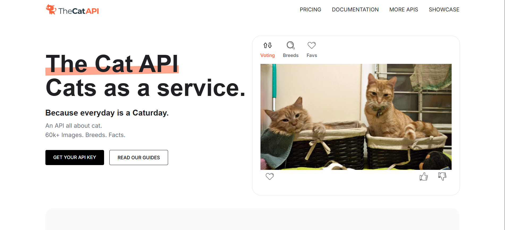

Sou estudante de Análise e Desenvolvimento de Sistemas. Tenho conhecimentos em Java, C, Pytdon, Dart e Flutter. Veja os projetos que já desenvolvi.
Minhas habilidades
| Java | Dart | Python | Flutter |
FakerA Faker API é uma ferramenta essencial para desenvolvedores que precisam gerar dados fictícios de forma rápida e eficiente. Amplamente utilizada em testes, desenvolvimento de software e preenchimento de bancos de dados sem o uso de informações reais. Veja o projeto |
Time APIA TimeAPI é uma solução prática para obter informações precisas sobre data e hora em diferentes fusos horários ao redor do mundo. Ideal para desenvolvedores que precisam sincronizar horários em aplicações web e sistemas distribuídos. Veja o projeto |

Cat APIA Cat API é um serviço online que fornece imagens e informações sobre gatos de forma programática, sendo amplamente utilizada por desenvolvedores para criar aplicações divertidas, educativas ou simplesmente para exibir fotos de gatos aleatórios. Veja o projeto |